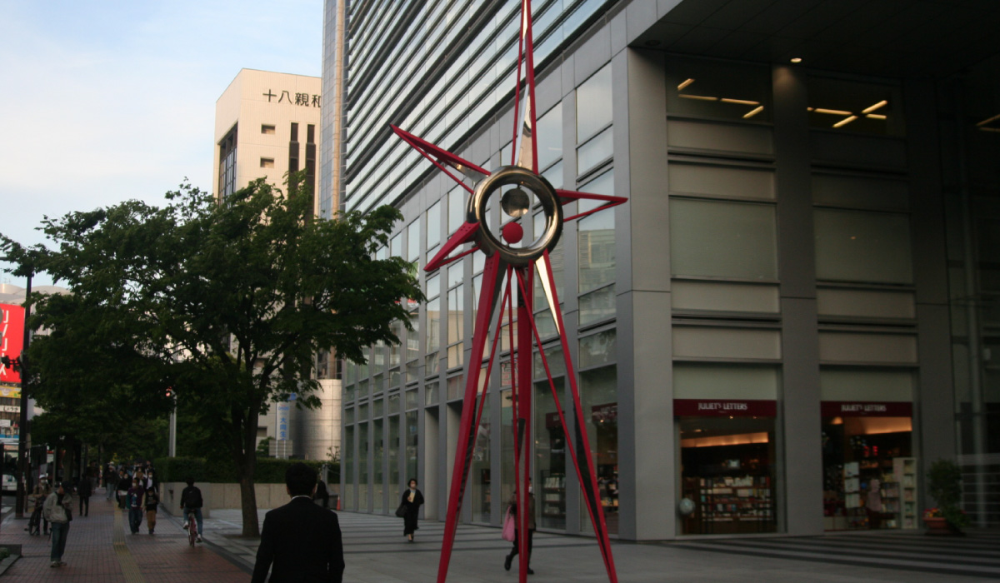
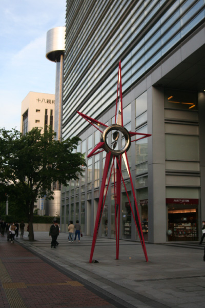
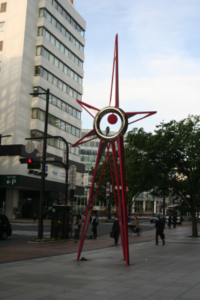
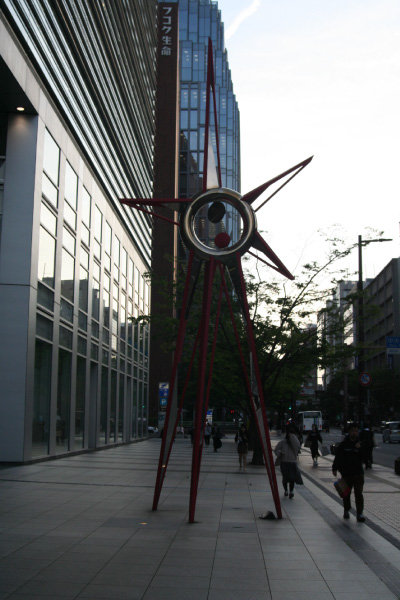
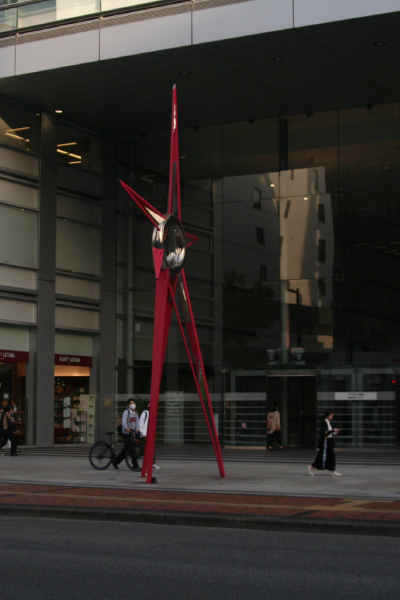

菊竹 清文
   
この作品には、アクロス福岡からアジア、世界、宇宙、そして未来へとコミュニケーションが大きく広
がっていくことを願う意味を込められている。現地で鑑賞する際はスターの真ん中の二つの円盤を注目
して頂きたい。この二つの円盤はアクロス館内の人の動きに合わせて回転する仕組みになっている。作
者は久留米市出身の情報彫刻家。「人間」と「自然」と「技術」を一体化した「情報彫刻」という新し
い領域の作品を発表。理工学の大学に通い、エンジニアとして最先端の技術を研究した菊竹氏は、その
技術をアートに落とし込み、芸術活動を始めた。長野オリンピック聖火台などの制作が有名。